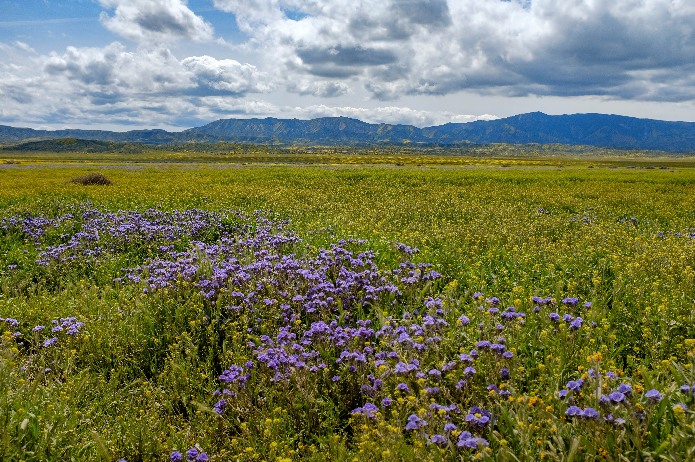

This Fall we have been leading three Champions Cohorts, with Fisheries Dependent Data Users (FDD), NOAA’s National Marine Fishery Service (NMFS), and the Gordon and Betty Moore Foundation’s Symbiosis in Aquatic Systems Initiative (SASI). We’ll share separate blog posts about each Cohort; here we wanted to focus on how we have been iterating the Champions program.
The Openscapes Champions Program is a leadership and professional development program modeled after Mozilla Open Leaders, focused on research teams, with original curriculum modeled from open data science lessons learned from the Ocean Health Index. We led 1 Champions Cohort in both 2019 and 2020; in 2021 we’ve led 6 Cohorts, learning and iterating each time. This Spring we introduced the 2-month series with NWFSC, CS&S, and CSU COAST Cohorts, working with Tara Robertson to improve our practices around diversity, equity, and inclusion, and followed up with 3-month check-ins where Champions shared and screenshared about their efforts for shared project management and onboarding new group members.
Over the Summer we invested what we had learned from Spring cohorts back into the Champions program to prepare for the 3 Fall cohorts. The updates to Fall Champions Cohorts include:
Cohort GitHub repos - we created a GitHub repository and website for each cohort in advance (FDD, NMFS, and SASI), to serve several purposes. It was a place to post information about the cohort: times we meet and teams involved, and to showcase how to make a website from a GitHub repository. It also provided a place for Champions to work during the GitHub Clinics (which previously had been in temporary repos), and give a continued space to practice Markdown, Issues, and Projects after the clinics. We also posted summary digest following each call using Issues instead of email.
GitHub Clinics - Teaching our GitHub Clinic as one of four cohort calls in the 2-month Cohorts felt tight in the Spring, so this fall we experimented having these Clinics as a fifth, optional, stand-alone call. We recorded it for folks that couldn’t make the additional times, and it seemed to still be impactful for participants – GitHub for project management was a big theme for the NMFS and FDD cohorts.
Guest teachers - We invited guest teachers to share their expertise with the Cohorts, either by presenting existing curriculum or sharing something from their work within the existing themes in the Champions curriculum. This was a way to include community members, hear different stories and examples, and tailor the curriculum for different cohorts depending on the expertise of the guest teacher.
Slack - We invited Fall Champions teams to Openscapes Slack after our first cohort call, providing each cohort with a private channel. This aligns with our approach that open science is a spectrum, and working openly with yourself, your team, and your cohort helps you build habits and confidence so you can work more openly with others when you’re ready. Fall Champions are able to interact within their private cohort channel as well as community channels to check-in between calls and share questions and resources.
Co-working - Something we do within our team that we’ve introduced this Fall are co-working sessions where we work at the same time together via Zoom. This is different from office hours but a chance for Champions to come together and work on something with low-key accountability and community, and to talk things out and ask questions. Sometimes, this means quiet work with check-ins to break up focused work and get feedback, and sometimes this involves screensharing to problem solve.
Onboarding Mentors - We’ve had a lot of help leading the Fall Cohorts, and are so grateful to partner mentors co-leading and assisting. We began working with and onboarding these mentors over the summer while also beginning writing the Openscapes Approach Guide to help document our process. We will have further blog posts about what we all learned and did together and are so grateful to Eli Holmes (NWFSC) and Corey Clatterbuck (California Water Boards) with the NMFS cohort, Anna Holder (California Water Boards) and Rachel Baum (UMassD Claire T. Carney Library) with the FDD cohort, and Lenny Teytelman (protocols.io) and Emma Ganley (protocols.io) with the SASI cohort!
It’s always great to see what topics resonate with different teams, and how they focus efforts in the interplay of software and culture; for example by using GitHub Projects as a way to strengthen collaborations between colleagues who are and aren’t yet coders, and provide a way to onboard folks if they’d like to learn more. Stay tuned for blogs sharing more details about the Fall Cohorts, and we’ll be iterating further in 2022, building from what works and experimenting further!
